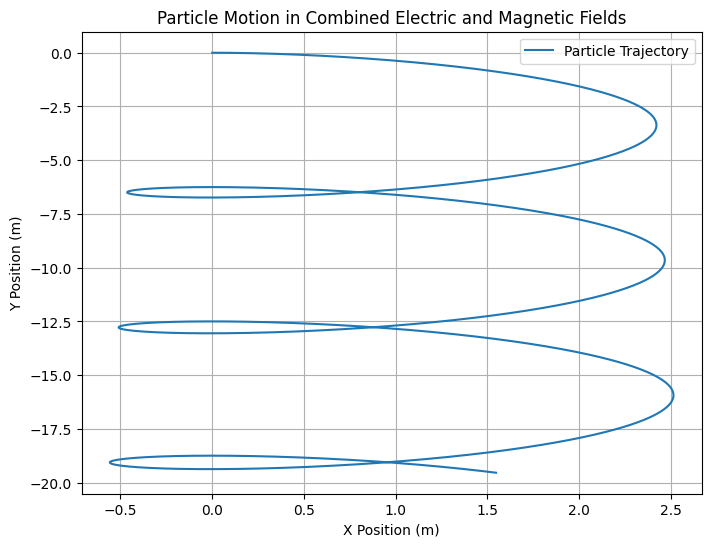
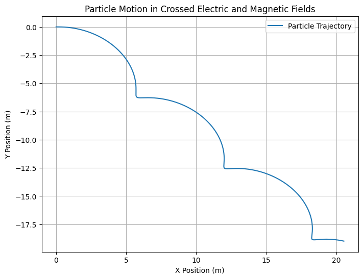
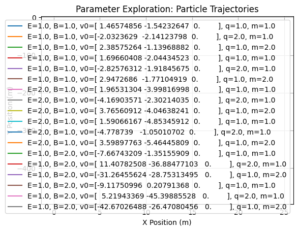

Problem 1
Lorentz Force and Related Formulas
1. Lorentz Force Formula:
The Lorentz force \(\mathbf{F}\) experienced by a charged particle with charge \(q\) moving with velocity \(\mathbf{v}\) in the presence of electric \(\mathbf{E}\) and magnetic \(\mathbf{B}\) fields is given by:
Where: - \(\mathbf{F}\) is the force on the particle, - \(q\) is the charge of the particle, - \(\mathbf{E}\) is the electric field, - \(\mathbf{v}\) is the velocity of the particle, - \(\mathbf{B}\) is the magnetic field.
2. Force on a Particle in a Magnetic Field:
The force on a charged particle moving perpendicular to a magnetic field is:
Where: - \(F\) is the force, - \(q\) is the charge, - \(v\) is the velocity of the particle, - \(B\) is the magnetic field strength.
This equation assumes that the velocity of the particle is perpendicular to the magnetic field.
3. Radius of Circular Motion in a Magnetic Field:
The radius \(r\) of the circular motion of a particle with charge \(q\) and mass \(m\) in a uniform magnetic field \(B\) is given by:
Where: - \(m\) is the mass of the particle, - \(v\) is the velocity of the particle, - \(q\) is the charge of the particle, - \(B\) is the magnetic field strength.
4. Cyclotron Frequency:
The frequency of a charged particle in circular motion in a magnetic field is called the cyclotron frequency and is given by:
Where: - \(f\) is the frequency, - \(q\) is the charge of the particle, - \(B\) is the magnetic field strength, - \(m\) is the mass of the particle.
5. Kinetic Energy of a Charged Particle:
The kinetic energy \(K\) of a particle with mass \(m\) and velocity \(v\) is given by:
This formula is important for calculating the energy of particles accelerated in systems like cyclotrons.
6. Lorentz Force in a Uniform Electric and Magnetic Field (Crossed Fields):
When both electric and magnetic fields are present, the motion of a charged particle can be described by the equation:
In cases of crossed electric and magnetic fields, such as in a velocity selector, the forces from both fields can balance, leading to specific trajectories.
7. Drift Velocity in Plasma:
In a plasma under the influence of electric and magnetic fields, the drift velocity \(\mathbf{v_d}\) of charged particles is given by:
Where: - \(\mathbf{v_d}\) is the drift velocity, - \(\mathbf{E}\) is the electric field, - \(\mathbf{B}\) is the magnetic field.
This drift velocity is crucial in understanding plasma behavior in magnetic confinement devices.
8. Motion of a Charged Particle in Both Electric and Magnetic Fields:
When both electric and magnetic fields are applied, the motion of the charged particle is described by the following second-order differential equation:
Where: - \(\frac{d^2\mathbf{r}}{dt^2}\) is the acceleration of the particle, - \(q\) is the charge, - \(m\) is the mass, - \(\mathbf{E}\) and \(\mathbf{B}\) are the electric and magnetic fields, respectively.
Summary of Key Equations:
- Lorentz Force: $$ \mathbf{F} = q\mathbf{E} + q\mathbf{v} \times \mathbf{B} $$
- Magnetic Force: $$ F = qvB $$
- Radius of Circular Motion: $$ r = \frac{mv}{qB} $$
- Cyclotron Frequency: $$ f = \frac{qB}{2\pi m} $$
- Kinetic Energy: $$ K = \frac{1}{2}mv^2 $$
- Drift Velocity: $$ \mathbf{v_d} = \frac{\mathbf{E} \times \mathbf{B}}{B^2} $$
Formulas for Simulating Particle Motion
1. Work Done by the Lorentz Force:
The work done by the Lorentz force \(\mathbf{F}\) over a displacement \(\mathbf{dr}\) is given by:
Since the magnetic force is always perpendicular to the velocity, the work done by the magnetic field is zero:
Only the electric field contributes to the work done on the particle.
2. Particle Motion in Both Electric and Magnetic Fields:
For a charged particle moving in the presence of both electric and magnetic fields, the equation of motion is:
Where: - \(\frac{d^2\mathbf{r}}{dt^2}\) is the acceleration of the particle, - \(q\) is the charge of the particle, - \(m\) is the mass of the particle, - \(\mathbf{E}\) and \(\mathbf{B}\) are the electric and magnetic fields, respectively.
3. Drift Velocity in Plasma:
In a plasma under crossed electric and magnetic fields, the drift velocity \(\mathbf{v_d}\) is given by:
Where: - \(\mathbf{v_d}\) is the drift velocity, - \(\mathbf{E}\) is the electric field, - \(\mathbf{B}\) is the magnetic field.
4. Helical Motion of a Charged Particle:
When a charged particle moves in a combined electric and magnetic field, its trajectory is often helical. The helical motion can be described by two components: 1. Circular Motion due to the magnetic field: $$ \mathbf{r}_\text{mag} = r \cos(\omega t) \hat{i} + r \sin(\omega t) \hat{j} $$ where \(\omega = \frac{qB}{m}\) is the angular frequency.
- Linear Motion due to the electric field: $$ \mathbf{r}\text{elec} = v\parallel t \hat{k} $$
Where: - \(\mathbf{r}_\text{mag}\) is the circular motion component, - \(r\) is the radius of the circular path, - \(\omega\) is the angular frequency, - \(v_\parallel\) is the velocity component parallel to the electric field, - \(\hat{i}, \hat{j}, \hat{k}\) are unit vectors in the x, y, and z directions, respectively.
The total position of the particle is the sum of the circular and linear components: $$ \mathbf{r}(t) = \mathbf{r}\text{mag} + \mathbf{r}\text{elec} $$
5. Velocity Components in Helical Motion:
The velocity of the particle in helical motion can be decomposed into two components: 1. Perpendicular velocity to the magnetic field: $$ v_\perp = \frac{qB}{m} r $$
- Parallel velocity along the direction of the electric field: $$ v_\parallel = \frac{E}{B} $$
Where: - \(v_\perp\) is the velocity perpendicular to the magnetic field (circular motion), - \(v_\parallel\) is the velocity parallel to the electric field (linear motion).
6. Magnetic Force in Non-Uniform Magnetic Field:
In a non-uniform magnetic field, the force on a charged particle is given by:
Where the additional term \(\frac{d\mathbf{B}}{dt}\) accounts for the change in the magnetic field over time, which leads to more complex dynamics.
Summary of Key Formulas:
- Work Done by Lorentz Force: $$ dW = \mathbf{F} \cdot d\mathbf{r} $$
- Equation of Motion in Electric and Magnetic Fields: $$ \frac{d^2\mathbf{r}}{dt^2} = \frac{q}{m}(\mathbf{E} + \mathbf{v} \times \mathbf{B}) $$
- Drift Velocity in Plasma: $$ \mathbf{v_d} = \frac{\mathbf{E} \times \mathbf{B}}{B^2} $$
- Helical Motion Components: $$ \mathbf{r}(t) = \mathbf{r}\text{mag} + \mathbf{r}\text{elec} $$


Formulas for Parameter Exploration
1. Lorentz Force with Variable Parameters:
The general equation for the Lorentz force acting on a charged particle of charge \(q\) and velocity \(\mathbf{v}\) in the presence of electric \(\mathbf{E}\) and magnetic \(\mathbf{B}\) fields is:
Where: - \(\mathbf{F}\) is the force, - \(q\) is the charge of the particle, - \(\mathbf{E}\) is the electric field, - \(\mathbf{B}\) is the magnetic field, - \(\mathbf{v}\) is the velocity of the particle.
2. Magnetic Force on a Charged Particle:
The force on a charged particle with charge \(q\) moving in a magnetic field \(\mathbf{B}\) is:
Where: - \(\mathbf{F_B}\) is the magnetic force, - \(q\) is the charge of the particle, - \(\mathbf{v}\) is the velocity, - \(\mathbf{B}\) is the magnetic field.
3. Electric Force on a Charged Particle:
The force on a charged particle with charge \(q\) in an electric field \(\mathbf{E}\) is:
Where: - \(\mathbf{F_E}\) is the electric force, - \(q\) is the charge of the particle, - \(\mathbf{E}\) is the electric field.
4. Radius of Circular Motion in a Magnetic Field:
The radius \(r\) of the circular motion of a charged particle with charge \(q\) and mass \(m\) in a magnetic field \(\mathbf{B}\) depends on the velocity \(v\) of the particle:
Where: - \(r\) is the radius of the circular path, - \(m\) is the mass of the particle, - \(v\) is the velocity of the particle, - \(q\) is the charge of the particle, - \(B\) is the magnetic field strength.
5. Cyclotron Frequency with Charge and Mass Variations:
The cyclotron frequency \(f\) depends on the charge \(q\), mass \(m\), and magnetic field \(B\):
Where: - \(f\) is the cyclotron frequency, - \(q\) is the charge of the particle, - \(B\) is the magnetic field strength, - \(m\) is the mass of the particle.
6. Velocity in Circular Motion:
The velocity \(v\) of a particle moving in a circular path under the influence of a magnetic field is given by:
Where: - \(v\) is the velocity of the particle, - \(q\) is the charge of the particle, - \(B\) is the magnetic field strength, - \(r\) is the radius of the circular path, - \(m\) is the mass of the particle.
7. Particle’s Kinetic Energy:
The kinetic energy \(K\) of a particle with mass \(m\) and velocity \(v\) is:
Where: - \(K\) is the kinetic energy, - \(m\) is the mass of the particle, - \(v\) is the velocity of the particle.
8. Particle’s Speed as a Function of Electric and Magnetic Fields:
When both electric and magnetic fields are present, the velocity components of a charged particle are influenced by these fields. The velocity components in the perpendicular and parallel directions are:
-
Perpendicular velocity component (in the circular motion due to the magnetic field): $$ v_\perp = \frac{qB}{m} r $$
-
Parallel velocity component (due to the electric field): $$ v_\parallel = \frac{E}{B} $$
Where: - \(v_\perp\) is the velocity component perpendicular to the magnetic field, - \(v_\parallel\) is the velocity component parallel to the electric field.
9. Motion of a Charged Particle in Combined Electric and Magnetic Fields:
The combined electric and magnetic fields affect the particle's trajectory. The equation of motion is:
Where: - \(\frac{d^2\mathbf{r}}{dt^2}\) is the acceleration of the particle, - \(\mathbf{E}\) and \(\mathbf{B}\) are the electric and magnetic fields, respectively, - \(q\) is the charge of the particle, - \(m\) is the mass of the particle.
10. Drift Velocity in Crossed Fields:
In a system with crossed electric and magnetic fields (perpendicular electric and magnetic fields), the drift velocity \(\mathbf{v_d}\) of the particle is given by:
Where: - \(\mathbf{v_d}\) is the drift velocity, - \(\mathbf{E}\) is the electric field, - \(\mathbf{B}\) is the magnetic field.
This equation describes the motion of a charged particle when both electric and magnetic fields are applied in a perpendicular configuration.
11. Helical Motion of a Charged Particle:
In the case of a combined electric and magnetic field, the particle’s trajectory can be helical. The helical motion components are:
-
Circular motion due to the magnetic field: $$ \mathbf{r}_\text{mag} = r \cos(\omega t) \hat{i} + r \sin(\omega t) \hat{j} $$
-
Linear motion due to the electric field: $$ \mathbf{r}\text{elec} = v\parallel t \hat{k} $$
Where: - \(\omega = \frac{qB}{m}\) is the angular frequency, - \(r\) is the radius of the circular path, - \(v_\parallel\) is the parallel velocity component.
The total position of the particle is the sum of both components:
12. Magnetic Force in Non-Uniform Fields:
In a non-uniform magnetic field, the force on a charged particle is:
Where the term \(\frac{d\mathbf{B}}{dt}\) accounts for the changing magnetic field, leading to more complex particle motion.
13. Work Done by the Lorentz Force:
The work done by the Lorentz force over a displacement \(\mathbf{dr}\) is given by:
Since the magnetic force is perpendicular to the velocity of the particle, it does not do any work:
Only the electric field does work on the particle.
Summary of Key Formulas:
- Lorentz Force: $$ \mathbf{F} = q\mathbf{E} + q\mathbf{v} \times \mathbf{B} $$
- Magnetic Force: $$ \mathbf{F_B} = q\mathbf{v} \times \mathbf{B} $$
- Electric Force: $$ \mathbf{F_E} = q\mathbf{E} $$
- Radius of Circular Motion: $$ r = \frac{mv}{qB} $$
- Cyclotron Frequency: $$ f = \frac{qB}{2\pi m} $$
- Particle’s Kinetic Energy: $$ K = \frac{1}{2}mv^2 $$
- Velocity Components in Circular Motion: $$ v_\perp = \frac{qB}{m} r $$
- Equation of Motion in Electric and Magnetic Fields: $$ \frac{d^2\mathbf{r}}{dt^2} = \frac{q}{m}(\mathbf{E} + \mathbf{v} \times \mathbf{B}) $$
- Drift Velocity: $$ \mathbf{v_d} = \frac{\mathbf{E} \times \mathbf{B}}{B^2} $$
- Helical Motion
